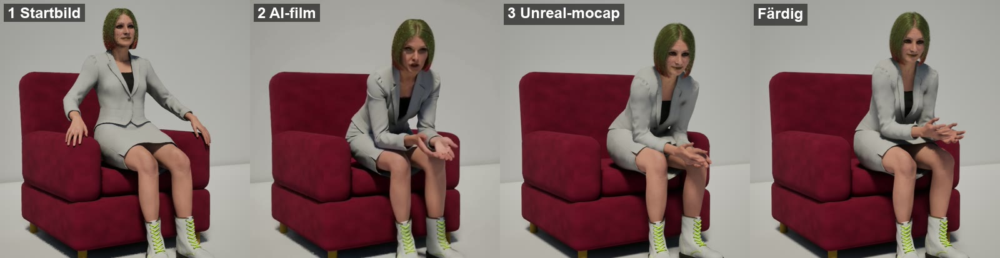
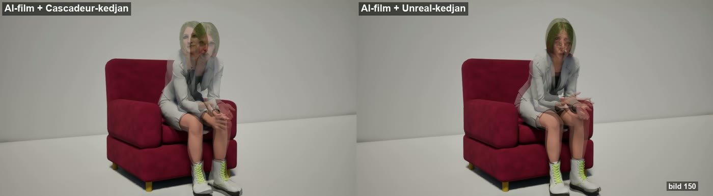
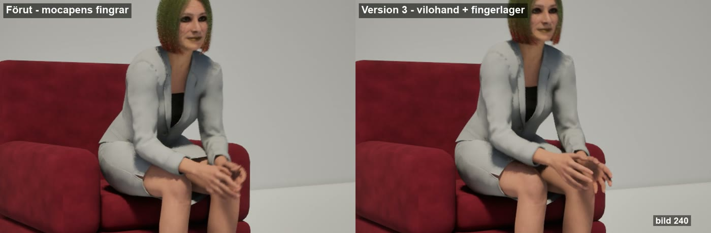
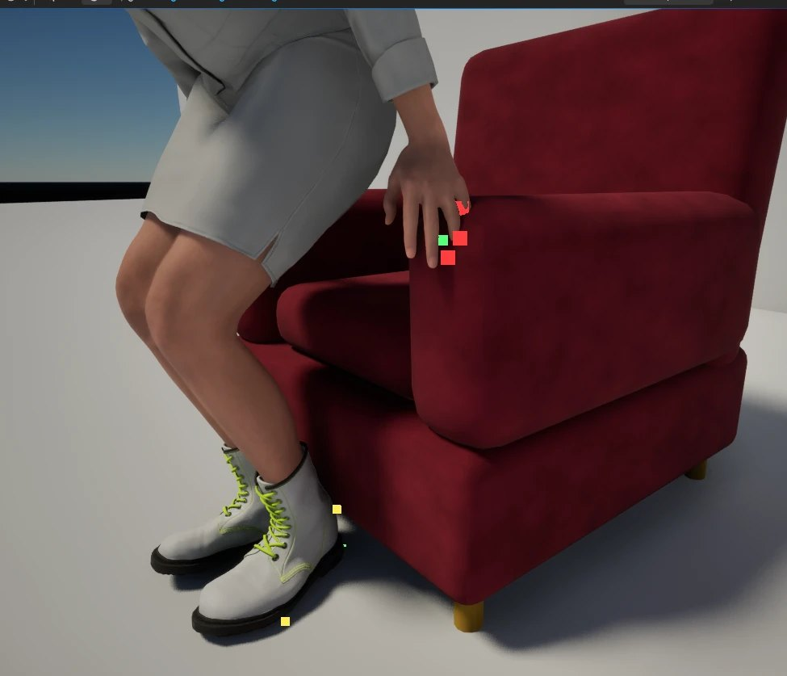
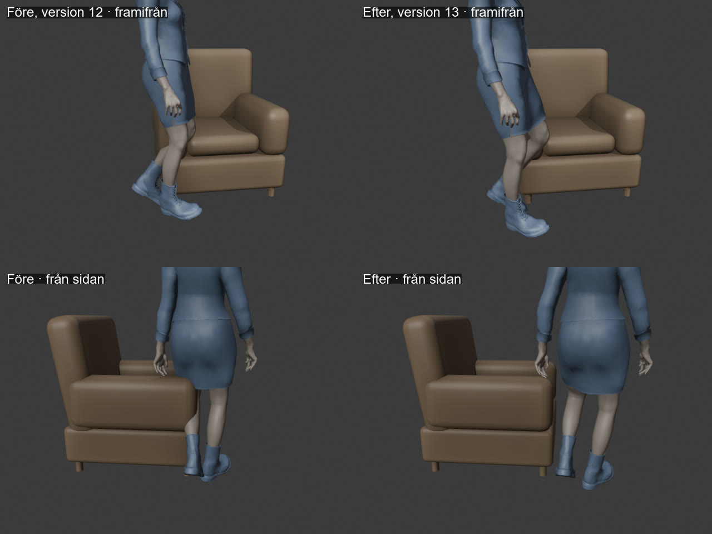
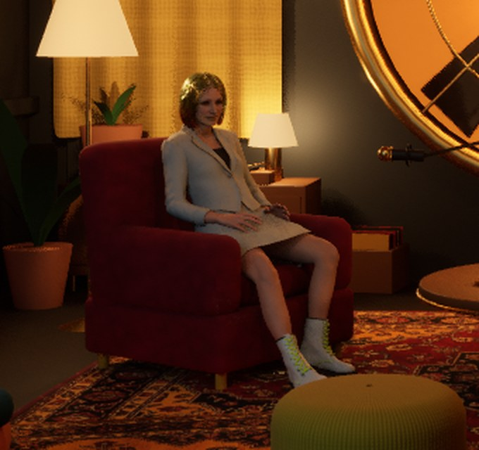

Kontaktmotorn
Från en AI-film till en färdig animation där Lisa sitter rätt i fåtöljen. Kedjan har femton steg i fyra program. Rumpan vilar på sitsen, händerna på armstöden, armbågarna på knäna, fingrarna följer kanten och fötterna står still.
Unreal tar fram rörelsen ur filmen. Cascadeur är verkstaden. En kontaktmotor i Blender räknar ut rättningarna i bakgrunden, och de läggs i egna lager i Cascadeur, så grunden alltid finns kvar. En sensor i Unreal går sist igenom hela klippet på 20 sekunder. Ett klipp tar i dag cirka 50 minuter maskintid och fyra klick. Sedan 7 oktober finns också en hylla med färdiga klipp som går samma väg på en kvart, och lager i Unreal där Stefan gör detaljerna.

Hela kedjan på en bild
Samma ögonblick, bildruta 150, genom kedjan. Startbilden renderas i Unreal och AI-filmen görs från den. Unreal tar fram rörelsen ur filmen, och efter städning, kontakt och lager sitter Lisa som i filmen.

Från AI-film till färdig animation
I den ordning de körs, med ungefärlig tid för ett klipp på 10 sekunder (301 bildrutor). Claude kör alla steg med skript. Stefan klickar fyra gånger: godkänner, kopplar bort och kopplar på Live Link, och importerar filmen när Cascadeurs egen video-mocap används.
- Förberett en gång per karaktär och möbel
-
0UnrealBlenderCascadeurScen, möbel och mallaren gång
En egen AI-scen i Unreal med grått golv och vägg, mjukt ljus, den riktiga fåtöljen och Lisa på samma plats som i studion. Studion rörs aldrig.
Möbeln får en kopia med exakt kollision för sensorn. Sensorn får 250 punkter på Lisas hud. Blender får en scen med Lisas exakta proportioner och fåtöljen på rätt plats. Cascadeur får en mallscen med riggad Lisa, fåtöljen och arbetsområde 0–300.
- Rörelsen
-
1UnrealStartbildca 4 min
Lisa renderas i fåtöljen i den pose där förra klippet slutade. Då börjar det nya klippet där det gamla slutade.
Kameran står snett framifrån, cirka 30°, med 35 mm cirka 3 m bort. En framåtlutning syns mycket bättre för mocapen från sidan än rakt framifrån. Renderas med Movie Render Queue.
-
2LTX 2.5 lokaltAI-filmca 9 min
En lokal videomodell gör en film på 10 sekunder ur startbilden och en beskrivning av rörelsen. Den kostar inget att köra.
Startbilden blir både första och sista bild, så klippet slutar i startposen och går att loopa. Kameran är låst i prompten. 720p, 24 bilder per sekund. Motorn startas bara när en film behövs och stoppas efteråt.
-
3UnrealVideo blir rörelseca 4 min
Unreals Markerless Mocap (MetaHuman Animator) tar fram kroppens rörelse ur filmens 241 bildrutor.
Vi provade Cascadeurs egen video-mocap på samma film. Fötterna gled 24 cm och hela kroppen hamnade fel, medan Unreals fötter höll sig inom 2,8 cm. Stefan sa "som natt och dag", så Unreals mocap är standard.
-
4UnrealPlacering och sanningca 1 min
Klippet placeras så att de första bildrutorna ligger exakt där förra klippet slutade. Sedan spelas varje ben in i varje bildruta, precis som Unreal visar det på Lisa.
Placeringen passar höft, knän och fötter mot förra klippets slut. Sanningen spelas in medan Sequencer stegas bild för bild med full detaljnivå, så fingrarnas hjälpben kommer med: 341 ben × 301 bildrutor på 21 sekunder, utan att byta nivå.
-
5BlenderBron och vilohandenca 1 min
Blender bygger exakt samma pose ur sanningen, flyttar in den i fåtöljens koordinater och ger fingrarna Lisas neutrala vilohand i hela klippet.
Mocap av fingrar fungerar inte: de rullar och hoppar. Därför har grunden alltid vilohanden, och fingrar görs separat. Bron stämmer på 0,0003 cm. Hela klippet exporteras som en FBX.
- Städningen i Cascadeur
-
6CascadeurKlippet inca 1 min
En kopia av mallscenen öppnas i en ny flik, och hela klippet klistras in på en gång.
Live Link måste vara bortkopplat innan en flik öppnas, annars får Unreal fel scen. Inklistringen stämmer på 0,5 cm.
-
7CascadeurBlenderSuperbildrutorca 6 min
Rörelsen görs om till ett trettiotal nycklar som går att redigera för hand. Gesterna finns kvar.
Cascadeurs Animation Unbaking väljer först sina nycklar. Blender jämför sedan med mocapen och lägger nycklar med originalposen där det avviker mest, i rundor. Till sist får alla nycklar vilohanden, för Unbaking lägger annars till egna knutna fingrar.
- Kontakten
-
8BlenderKontaktmotornca 4,5 min
Motorn rättar varje bildruta. Fötterna står kvar och rumpan vilar på sitsen. Händerna läggs på armstöden, och armbågarna på knäna när hon lutar sig fram. Händer och underarmar hålls ute ur benen.
Den mäter mot riktiga punkter i hud och kläder och mot möbelns exakta form. Passen beskrivs längre ned. För klipp där hon går används också gångvägen, så att hon går runt möblerna.
-
9BlenderJämna ut rättningenca 1 min
Rättningen jämnas ut över tiden så att den aldrig rycker.
Skillnaden mot grunden jämnas ut per led över ±4 bildrutor. Innan ryckte huvud och armbågar upp till 3,4 cm per bildruta², mot 0,05 i mocapen. Efteråt är rörelsen lika mjuk som mocapen och kontakten densamma.
-
10BlenderFingrarnaca 1 min
Bara där händerna vilar böjs fingrarna från vilohanden över armstödets kant. Annars är handen neutral.
Led för led, med vinkeln vald över hela klippet så att den lugnaste vägen vinner. Fingrarna gick från 5 cm in i armstödet till 0,2 cm.
- Lagren och kontrollen
-
11CascadeurLager för kropp och fingrarca 12 min
Kroppsrättningen läggs i lager ett och fingrarna i lager två. Grunden ligger orörd under. Varje lager kan slås av och på, tonas ner eller justeras.
Nycklarna väljs så att lagret följer motorn inom 1°: 54 för kroppen och 27 för fingrarna. En inklistring sparar skillnaden mot allt under lagret. Steget är långsamt, cirka 5 sekunder per nyckel, och kan göras med en enda inklistring.
-
12BlenderKontrollca 2 min
Allt med lagren på exporteras och mäts mot motorns facit: kontakt, glipor, glidning och ryck.
AIScen_2: medelavvikelsen mot facit är 0,1 cm. Det finns 15 små fingerhopp, mot 132 innan, och 3 små kroppsryck, mot 34.
-
13CascadeurUnrealLive Linkett klick
Stefan startar Live Link på fliken. Unreal visar då Cascadeurs animation direkt, och varje ändring syns på en gång.
-
14UnrealSkanning20 s
Sensorn går igenom alla 301 bildrutor i Unreal och mäter varje punkt mot möblerna och golvet.
AIScen_2 version 3: inga bildrutor där något går in i fåtöljen. Fingrarna ligger an mot kanten inom en halv millimeter. Sensorn visar dessutom röda, gröna och gula prickar live medan man jobbar.
-
15UnrealRendering och jämförelseca 4 min per vinkel
Klippet renderas från AI-filmens vinkel och läggs bredvid filmen. Ett överlägg med båda bilderna genomskinliga visar direkt hur väl rörelsen följer.
Sedan kommer det som görs sist i Unreal: ansikte från rösten, små detaljer i Sequencer-lager och slutrendering.
Var tiden går
Maskintid för ett klipp på 10 sekunder, steg för steg. Stefans fyra klick är inte inräknade.
Tre regler som avgör kvaliteten
De här har vi lärt oss den hårda vägen. De står överst i skillen animationsflode.
Alltid Unreal för video till rörelse
På samma AI-film gled Cascadeurs fötter 24 cm och Unreals 2,8 cm. Unreal fångade också att hon flyttar sig fram på sitsen och slutade där hon började. I överlägget ligger Unreals version nästan exakt på filmen.
Standard sedan 4 oktoberGrunden har alltid vilohanden
Mocap kan inte fånga fingrar: de rullar och hoppar. Grunden får Lisas neutrala vilohand. Fingrar som behövs, som böjen över armstödet, läggs i ett eget lager, och resten görs sist i Unreal.
Hård regelVarje rättning i ett eget lager
Grunden rörs aldrig. Kroppsrättningen ligger i ett lager och fingrarna i ett annat. Egna ändringar görs i ett tredje lager. Allt kan slås av, tonas ner eller göras om.
Hård regel
Varför kontakten räknas i Blender
Vi provade tre vägar den 3 oktober. Blender är bara en dold miniräknare. Ingen behöver öppna den.
Aktiv ragdoll
Med löst inställda leder föll armarna ner på låren. Med styva leder svävade händerna cirka 2,5 cm, handlederna slets upp och fingrarna saknade fysikkroppar.
FörkastadAutoPhysics och FixFoot
Fysiken räknar bara golvet som stöd, inte fåtöljen. När händerna låstes sjönk kroppen 20–30 cm ner i fåtöljen. Kontakt med omgivningen kräver Pro.
Inte för kontaktenEgen kontaktmotor
Mäter mot varje punkt i hud och kläder och mot möbelns exakta form. Räknar i bakgrunden utan att låsa Unreal eller Cascadeur. Unreals Python kan inte läsa huden, så sensorn får nöja sig med 250 punkter.
ValdFå nycklar, men gesterna kvar
En animation med en nyckel per bildruta går inte att redigera för hand. Cascadeurs Animation Unbaking gör om den till några få nycklar, men jämnar då ut små gester. Därför jämförs resultatet med mocapen, och nycklar läggs till där det avviker mest.
Avvikelse från mocapen, medel över händer, armbågar, huvud, rygg och ben
Tio pass, i den här ordningen
Varje pass mäter först, ändrar sedan bara det som behövs och går mjukt in och ut. Vilka pass som körs beror på klippet. När hon sitter kör motorn fotankare, kropp, händer, lås, armbåge mot knä, underarm och frigång. När hon går kommer gångvägen först.
Fotankare nytt i v14
Video-mocapen glider långsamt i djupled. Cascadeurs version gled 24 cm på 10 sekunder, så skenben och händer hamnade i fåtöljen. Fötternas mittpunkt hålls kvar där den var i första bildrutan, och hela kroppen flyttas med. Används när hon sitter och inte flyttar fötterna med avsikt.
utjämnat över 12 bildrutor · körs förstGångväg
När hon går förbi en möbel flyttas hela kroppen åt sidan, lagom mycket för att höfter, lår, kjol, smalben och fötter ska gå fria. Banan räknas för hela klippet på en gång, så den svänger mjukt runt hörnet. Fötterna står kvar i varje steg, och när hon sitter är flytten noll.
1,5 cm luft · fötterna glider inte · noll när hon sitterKropp
Höften flyttas upp eller ner så att huden vilar på sitsen. Tyget får tryckas ihop. När hon står flyttas höften så att fötterna når golvet. Benen följer med IK. Med Unreals mocap behövdes bara 1–2 cm, med Cascadeurs 13 cm.
högst 0,5 cm in i sitsenHänder
Handflatan läggs mot armstödet. Motorn provar olika vinklar runt handleden och väljer den där handflatan vilar och knogarna inte trycker för hårt. Armen räknas fram med IK. Kontakten slås på och av med fördröjning, så att den inte fladdrar.
luft 0,2 cm · lutning ±20° · rull ±12°Lås mot glidning
En hand som vilar och en fot som står låses fast i läge och vinkel. Mocapen glider annars några centimeter. Två vilolägen tätt efter varandra binds ihop, så handen glider mjukt till nästa läge.
fötterna stilla 96–97 % i AIScen_2Armbåge mot knä nytt i v14
Kropp mot kropp: när hon lutar sig fram läggs armbågarna på knäna. Överarmen hänger nästan lodrätt, så det är ryggens lutning och axeln som flyttar armbågen. Huvudet behåller blicken. Sedan böjs armbågen så att underarmen ligger ovanpå låret, och händerna hålls ute ur benen. När armbågen ska vila avgörs av mocapen själv.
glipa 0,2–0,3 cm · rygg högst 20° · axel högst 12°Underarm
Armbågen vrids runt linjen mellan axel och handled så att underarmen vilar på armstödet. Den vrids bara om underarmen faktiskt når ner.
högst ±30° · bara när handen vilarFingrar
Från vilohanden böjs fingrarna led för led så att de följer armstödets kant, men bara där handen vilar. Vinkeln väljs över hela klippet, så den lugnaste vägen vinner. Fingrarna läggs i ett eget lager.
högst 5° per bildruta · tummen dras aldrigSäkerhet för fingertoppar
Varje vertex i fingrarna kontrolleras. Där en topp fortfarande går in böjs fingret minsta möjliga, och rättningen sprids över bildrutorna runt omkring.
tillåtet: knoge 0,7 cm, topp 0,3 cm inFrigång
Fötter och smalben som inte vilar men ändå går in i möbeln flyttas ut, och benet följer med IK. Medan foten står still är flytten konstant, så att den inte glider.
bara fötter och smalbenEfter motorn jämnas rättningen ut över ±4 bildrutor (steg 9). Kontakten blir densamma, men rörelsen blir lika mjuk som mocapen.
Armbågarna mot knäna, tre försök
Bibliotekets klipp 7: Lisa lutar sig fram med armbågarna på knäna, pratar med händerna och lutar sig tillbaka. Det var första gången kedjan körde kropp mot kropp. Första försöket gick med Cascadeurs video-mocap, det andra med Unreals mocap, och det tredje med vilohand och utjämnad rättning.
| Mått | Cascadeur-mocap | Unreal-mocap v1 | Unreal-mocap v3 |
|---|---|---|---|
| Fötternas drift i mocapen | 24 cm | 2,8 cm | 2,8 cm |
| Grunden mot mocapen, medelavvikelse | 4,3 cm | 1,2 cm | 0,6 cm |
| Armbåge mot knä, glipa (median) | 0,3–0,4 cm | 0,3 cm | 0,2 cm |
| Arm eller hand in i benen, värst | 1,3–1,8 cm | 0,9 cm | 0,9 cm |
| Bildrutor med något inne i fåtöljen (Unreal-skanning) | 22 + 29 | 0 | 0 |
| Fötterna står still | 85 / 77 % | 96 / 97 % | 96 / 97 % |
| Fingerhopp, mer än 15° per bildruta | – | 132 | 15 |
| Kroppsryck, mer än 2,5 gånger mocapen | – | 34 | 3 |

I första försöket landade höger hand i armstödet i 22 bildrutor och fingrarna gick in i 29. Det försvann med Unreals mocap. Stefan såg sedan rullande fingrar och små ryck i andra försöket. De kom från mocapens fingrar, från Unbakings egna fingerposer och från motorns snabba övergångar. I tredje försöket är alla tre borta.
Rättningarna i egna lager, grunden orörd
Cascadeur har lager som kan slås av och på eller tonas ner. Lager ett har kroppsrättningen och lager två fingrarna. Grunden är Unreals mocap som superbildrutor. Egna ändringar görs i ett tredje lager.
Inklistring blir skillnad
När en pose klistras in i ett lager sparas skillnaden mot allt under lagret. Fingerlagret flyttar kroppen högst 1,6 mm, och lagren av ger exakt grunden.
Allt följer med
Inklistringen gäller alla leder. Poserna byggs därför så att allt som inte ska rättas är lika med det som ligger under, till exempel vilohanden. Annars följer till exempel mocapens fingrar med in i lagret.
Inga hopp mellan nycklarna
Nycklar i ett lager hoppar från början. Lager ett mjukas med ett skript. Lager två och senare mjukas med tidslinjens eget kommando, eftersom skriptgränssnittet bara når första lagret.
En sensor som känner kontakten
Stefans idé var en "igelkott" av strålar runt Lisa. Den blev en sensor som mäter medan han posar i Cascadeur och ser resultatet via Live Link. Han ser prickarna, och Claude får samma siffror med bildrutans nummer.

Hon går runt fåtöljen, inte igenom den
I första klippet skar mocapens gångväg rakt genom fåtöljens hörn. Höften gick 10 cm in i armstödet och vänster smalben lika långt in i sidan. Pass 0 löste det utan att flytta möbeln.

Hur långt hon flyttas, bildruta för bildruta
Höftens flytt i sidled i centimeter, bildruta 0–130. Kurvan börjar i god tid, är som störst vid stolens hörn och är noll när hon sitter.
Planera över tid, inte bildruta för bildruta
Version 10 valde fingrarnas vinkel bildruta för bildruta, och de hoppade. Version 11 väljer över hela klippet med ett tak per bildruta. Samma lärdom gav senare gångvägen och utjämningen av rättningen.
Pekfingrets första led, vänster hand
Böjvinkel i grader, bildruta 60–200. Handen landar på armstödet kring bildruta 70 och vilar sedan.
Färdiga klipp går samma väg som filmen
Filmen är huvudvägen. När mocapen inte räcker, eller tiden inte finns, tas rörelsen från en hylla: egna godkända klipp i banken, och gratis paket som Epics Game Animation Sample med cirka 500 städade klipp. Ett paketklipp får exakt samma städ som ett mocap-klipp och mäts med samma sensor. Flödet för alla projekt står i I:\Verkstad\ANIMATIONSFLODE.md.

-
1UnrealRetargetca 1 min
Epics egen retargetering från gubben till MetaHuman, i batch. Lisas kropp sätts som proportionskälla, så benen inte sträcks.
-
2UnrealPlacering och sanningca 1 min
Samma skript som för mocap: bäckenet 10 cm framför fåtöljens pivot, vänd som fåtöljen. Sedan sanningen via Sequencer, 751 nycklar på 52 sekunder.
-
3BlenderKontaktmotornca 8 min
Den direkta kedjan i en bakgrunds-Blender: bron, vilohand, sluten loop, passen, utjämning, mätning och FBX.
-
4UnrealImport, sekvens, sensor, bildca 2 min
Klippet in, Lisa i fåtöljen i studion, skanning och en renderad bildruta. Sedan riggen och verktyget, se nästa avsnitt.
| Zon, sensorn i studion | Rått paketklipp | Efter motorn |
|---|---|---|
| Bakdel mot sitsen | 7,1 cm inne | 0,07 cm luft |
| Lår mot sitsen | 7,5 cm inne | 3,7 cm inne, mjuk dyna som förut |
| Vänster fot mot golvet | 7,8 cm inne | 0,2 cm luft |
| Höger fot | 2,2 cm inne | 0,3 cm luft |
| Händer över armstöden | 9 cm | 13 cm, i knät |
Fötterna står helt still, loopskarven är 0,02 cm och rörelsen är lika mjuk som originalet. Händerna ligger i knät i bänkposen, 13 cm från armstöden, och motorn fångar bara inom 8 cm. Så det här blev en idle med händerna i knät, en annan än den med händerna på armstöden. Stefans dom: "väldigt bra grundarbete så jag kan lägga min tid på detaljerna".
Grunden orörd, detaljerna i lager
När grunden är mätt läggs MetaHumans egen Control Rig som lager ovanpå i Sequencer, och armar kan tas från ett annat klipp som additivt lager. Stefan gör det sista med lager och pickern i MetaHuman Animation Tool. Hur det går till, steg för steg: Lager i Unreal.

Riggen som lager
MetaHumans kroppsrigg, 162 kontroller med FK och IK, som lagrat Control Rig-spår på kroppen. Riggen vill ha benen i IK och löste knäna på nytt, upp till 14 grader fel. Med benen i FK återger en tom rigg grunden inom 0,03 grader.
Mätt med export från SequencerArmar från ett annat klipp
En kopia av källklippet där alla ben utom armkedjan fryses på bild 0, så deras additiva skillnad blir noll. Fingrarna fryses också, så vilohanden står kvar. Kopian läggs som sektion på rad 1 och kan viktas, kortas och flyttas.
54 armben följer med, 288 ben frystaMetaHuman Animation Tool
Locodromes picker för kropp och ansikte, FK/IK-växling per kroppsdel, tween, pose-urklipp, spegling och snap till sockets. Rent Blueprint, hämtat från ett 5.7-projekt. Knapparna behöver motorns plugin CommonUI.
Öppnas av kedjan när grunden är klarSå startar du nästa animation
Ordningen och reglerna ligger i skillen animationsflode, verktygen i kontaktmotor. Det finns också en instruktionsbok för AI-agenter, ANIMATIONSKEDJAN_AI.md, som beskriver hela kedjan så att en annan agent kan köra den.
Fällor vi redan har gått i
Kvar att göra
Var allt ligger
| Plats | Innehåll |
|---|---|
| ~\.claude\skills\animationsflode\ | Flödet steg för steg: ordningen, de hårda reglerna, lagren och sensorn. |
| ~\.claude\skills\kontaktmotor\ | Verktygen och mätningarna bakom varje steg, och den här sidan i docs\. |
| …\kontaktmotor\blender\ | Motorn (kontakt_motor, kontakt_losare2, kontakt_egen), bron och scenbygget. I till_cascadeur\ ligger jobben för superbildrutor, utjämning, lager och kontroll. |
| …\kontaktmotor\cascadeur\ | Öppna flik, klistra in hela klipp och nycklar, lager, kopior, status och fönsterbilder. |
| …\kontaktmotor\unreal\ | Unreal-skripten: sanning via Sequencer (pod_truth_seq), placering, drift, sensorn och rendering. |
| …\kontaktmotor\scripts\ | Hjälparna för Unreal-konsolen och slingan för superbildrutor (superramar_loop.ps1). |
| I:\Verkstad\kedja\ | AI-filmen: LTX-motorn startas och filmen görs (ltx_starta.ps1, ltx_video.py). |
| I:\Ombra Media\Podcast\CascTest\AIScen_2\ | Arbetsfilen Lisa_AIScen_2_v3.casc (grund, kroppslager, fingerlager) och kopiorna i gammalt. |
| I:\Ombra Media\Podcast\Mocap\ | Jämförelsefilmerna, till exempel Jamforelse_AIScen_2_v3.mp4 och Overlagg_AIScen_2_kedjorna.mp4. |
| OmbraPodcast\Saved\ClaudeScripts\pod_paket_*.py | Hyllan: retarget, placering, sekvens, rigg som lager, ben i FK, trohetskontroll och armar som additivt lager. |
| /Game/Podcast/Library/Paket/ | Retargetade paketklipp, det färdiga AS_Paket_bench_kontakt1, armlagret och testsekvensen LS_Paket_Test. |
| I:\Unreal Engine\Projects\GameAnimationSample\ | Epics Game Animation Sample som källa. Walk, Idle, Poses, LookAtPOI och Bench är kopierade till OmbraPodcast. |
| I:\Verkstad\ANIMATIONSFLODE.md | Flödet för alla projekt: film, mocap, städ, bank, med grindar och fallback till hyllan. |